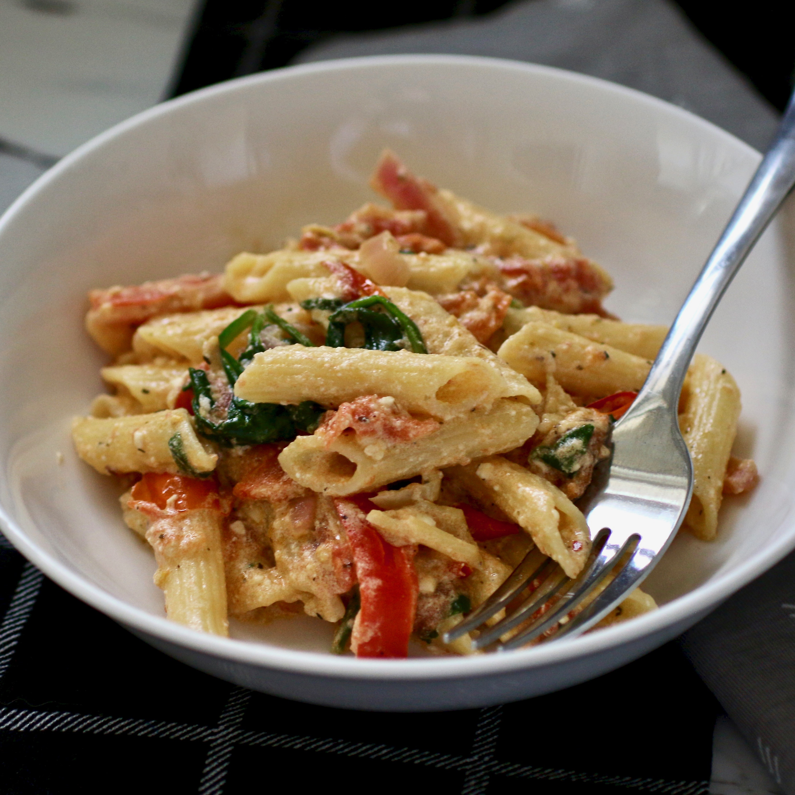

Baked Feta Pasta

Description
An quick and easy to make pasta with feta cheese. A great healthy main dish for dinner, that leaves everyone full and satisfied. Its a great dish to make a family favorite, since ingreidents are very accessible.
ingreidents
- 2 pints cherry tomatoes
- 1/2 cup sliced red bell pepper
- 1/2 cup sliced red onion
- 1/2 cup olive oil
- 4 cloves peeled garlic,or more to taste
- 2 tablespoons freshly squeexed lemon juice
- 1 tablespoon lemon zest
- 1/2 teaspoon red pepper flakes
- 1/2 teaspoon freshly groun black pepper
- 1/2 teaspoon italian seasoning
- 1/2 teaspoon dried basil
- 1/4 teaspoon sea salt
- 1 (8 ounce) package cheese, feta
- 1 (12 ounce) package penne pasta
- 1 cup baby spinach
Steps
- Preheat the oven to 400 degrees F (200 degrees C).
- Combine cherry tomatoes, bell pepper, onion, olive oil, garlic, lemon juice, lemon zest, red pepper flakes, black pepper, italian seasoning, basil, and sea salt in a 13x9-inch baking dish.
- Make room in the middle of the pan and add block of feta cheese. Flip in oil, making sure cheese remains intact and becomes well coated.
- Bake in the preheated oven until the cherry tomatoes begin to blister and split, 40 to 45 minutes.
- Meanwhile, bring a large pot of lightly salted water to boil. Add penne and cook, stirring occasionally, until tender yet firm to the bite, about 11 minutes. Drain and reserve about 1 cup of the pasta water.
- Remove feta-tomato mixture from the oven. Mash garlic, tomatoes, onions, and peppers with a heavy spoon and mix with the feta cheese, creating a sauce. Stir in spinach and cooked pasta. The spinach will get cooked from the heat of the pasta sauce and pasta. Add pasta water, a little at a time if needed, to reach desired consistency. Mix well and serve.